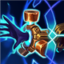
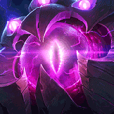
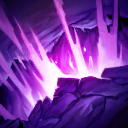
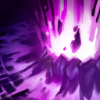
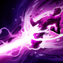

核心裝備
 黑焰火炬
黑焰火炬 無限寶珠
無限寶珠 死亡之帽
死亡之帽 虛空之杖
虛空之杖
視界專注

以下為本站 7.2d 校正後的標準配置；實戰仍需依敵方陣容調整。



技能優先：Q > W > E
技能命中會附加結構毀滅，疊滿三層時造成大量真實傷害；普攻可以刷新標記持續時間。
發射電漿彈造成魔法傷害與緩速，命中、到達終點或再次施放時會向左右分裂。

在地面撕開裂痕造成一次傷害，短暫延遲後再次爆發，是清線與疊被動的主要技能。

引爆指定區域造成魔法傷害與擊飛；在自身附近施放時也能把貼近的敵人擊退。

引導可控制方向的射線，持續造成傷害與緩速；已疊滿解構的研究目標會改為承受真實傷害。
1技斜射 → 提早分裂 → 2技兩段傷害 → 保持後排距離
一技不要總是直線施放，利用側向分裂延長有效距離；緩速命中後二技更容易吃滿兩段。
3技擊飛 → 2技裂痕 → 1技緩速 → 4技射線
三技命中後立刻放二技，擊飛與緩速可確保兩段傷害；疊滿解構後再開大，最大化真實傷害。
3技近身擊退 → 1技緩速 → 2技封路 → 光盾 → 4技反打
敵人貼近時三技會將其擊退，是最重要的自保手段；拉開距離後再用光盾與技能反打，不要先手浪費三技。
一級可用二技兩段傷害快速推線，之後以斜角一技分裂彈消耗。三技是唯一硬控與自保技能，敵方刺客有進場能力時不要用它單純補傷害。
物件團站在牆後或前排後方，先用一技緩速再接二技兩段與三技擊飛，快速疊滿三層解構。大絕最好對已研究的目標施放，將傷害轉為真實傷害。
維持與射手相近的後排站位，利用超遠技能消耗前排也能產生價值。敵方控制與突進尚未交出時不要急著引導大絕，否則很容易被中斷。
對局名單是本站依英雄機制與目前配置整理的參考，不等同固定勝率。
中路優先處理爆發、控制與抗性問題；標準輸出核心不因單一威脅整套推翻。
觸發：對線或團戰有能直接貼近你的刺客／爆發核心，常在完成第一輪輸出前死亡。
女妖面紗補魔防並提供法術護盾，可阻斷對方第一段開戰。
骨甲降低接續傷害，適合換掉較貪輸出的副系符文。
觸發：敵方有多個關鍵硬控，會讓你無法安全站位或施放完整連段。
女妖面紗的法術護盾能先擋一次關鍵技能，讓法師保留施法空間。
堅毅提供韌性，受到硬控時也能短暫提高雙防。
觸發：敵方前排多，團戰需要你持續處理高生命目標，而不是只秒後排。
用百分比生命灼燒或魔法穿透提高長時間處理高血量／高魔防前排的效率。
觸發：敵方治療、吸血或回復讓你的消耗與爆發很難真正壓低血線。
黑魔禁書能由魔法傷害穩定施加重創，適合法師與軟輔處理大量治療。
觸發：敵方核心已經針對你的主要傷害類型堆高物防或魔防。
你不是隊伍主要穿透來源，或標準配置已經有足夠百分比穿透／削抗。
提醒：「坦克多」看的是高生命前排；「抗性高」則是對方已經明確堆高物防／魔防，兩種情境不一定相同。
7.2a 中路第四批正式版：技能名稱與核心機制依 Riot Games 台灣《激鬥峽谷》官方英雄資料校正；版本基準採官方 7.2 與 7.2a 更新公告，出裝、符文與對局方向參考 7.2a 當前中路環境後整合。Tier 維持本站既有 46 位中路正式名單評級。｜v62：完整套用阿璃中路固定母版，中路 46/46 全數完成。
本站於 2026-08-27 依 Patch 7.2d 重新檢查此配置。 Tier、出裝、符文與對局屬於 Wild Rift Guide 的整理與分析，不是 Riot Games 官方推薦；版本改動後會再依官方公告與實戰資料校正。